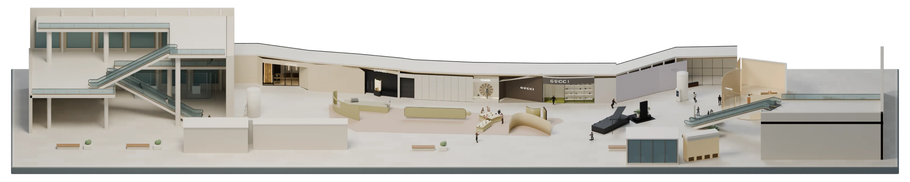
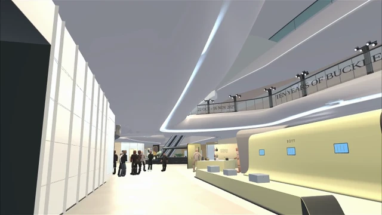
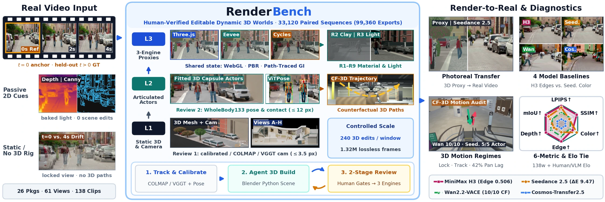
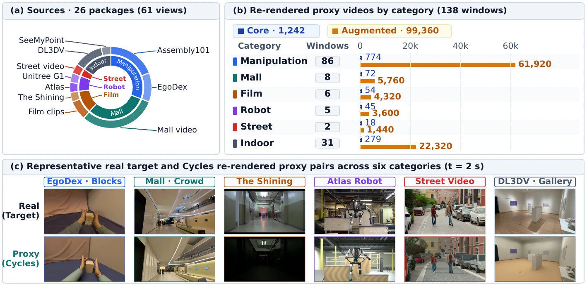
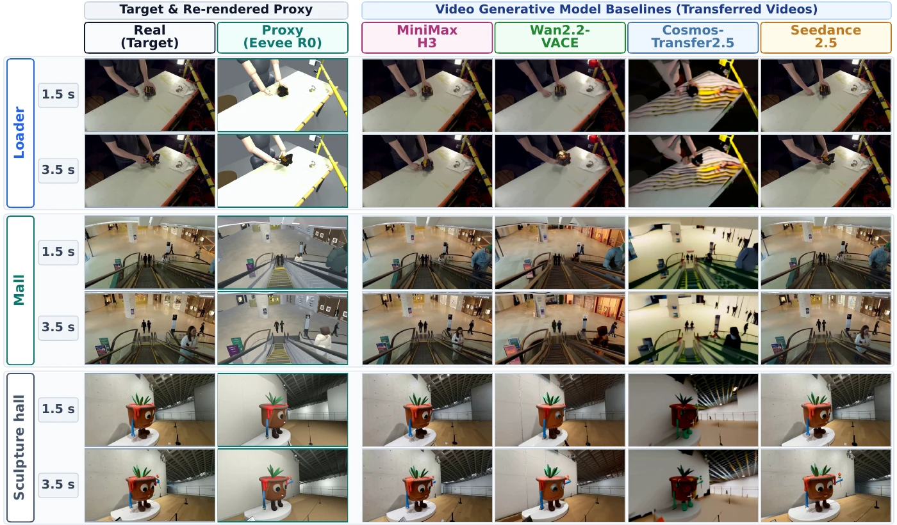

RenderBench: Benchmarking Render-to-Real Video Transfer with Editable Scene Reconstructions
Existing conditional video benchmarks rely on passive 2D controls extracted from target footage, making it impossible to diagnose how upstream 3D rendering fidelity, materials, illumination, or trajectories shape generation. RenderBench pairs 138 real-world video windows with human-verified, editable dynamic 3D scenes across three rendering engines—unlocking controlled appearance, lighting, and counterfactual 3D motion interventions at scale.
Click Any Camera in the Shared 3D Mall · Drag to Compare
Eight calibrated camera trajectories (Views A–H) observe a single unified, human-reviewed 3D shopping mall reconstruction. Select any camera marker on the 3D map to inspect how four video generative models transform the synthetic 3D proxy into photorealistic video.

Same 3D Scene & Camera · Three Rendering Engines
Holding 3D geometry, camera trajectory, animation, prompt P6, and the t = 0s reference frame strictly fixed, RenderBench exports aligned proxy streams from Three.js (WebGL Raster), Blender Eevee (Real-Time PBR), and Blender Cycles (Path-Traced GI).

| Model | LPIPS↓ | ΔE₀₀↓ | Edge F1↑ |
|---|
Frame-Registered Benchmark Video Theater
Still frames cannot reveal temporal flicker, finger articulation, or camera-pan lag. Watch full 24 fps synchronized streams compiled directly from hash-verified benchmark records (t = 0s conditioning frame excluded from scored motion).
Boundary–Color Decoupling & The Aggregation Weighting Paradox
Evaluating 138 five-second windows across 15 source groups exposes a fundamental trade-off: MiniMax H3 leads structural boundary alignment (0.506 Edge F1), while Seedance 2.5 achieves superior color fidelity (9.470 ΔE₀₀)—and naive equal-window averaging reverses their color gap due to tabletop manipulation dominance (62.3% of windows).
| Model / Reference Baseline | LPIPS ↓ | MS-SSIM ↑ | ΔE₀₀ ↓ | Edge F1 ↑ | CLD ↓ | Inst. mIoU ↑ |
|---|
46.4% human / 49.1% VLM), whereas temporal track retention and color fidelity strongly govern human preference.
Probing Prompts (P0–P6), Shading Edits (R1–R9) & 3D Motion Regimes
Because RenderBench controls the underlying 3D scene, we isolate single upstream factors—stripping textures (R1), clay shading (R2), removing ambient light (R3), or reversing/editing 3D actor & camera trajectories—with 95% source-group bootstrap intervals.
Wan2.2-VACE · 10 / 10 Scenes
Strictly obeys counterfactual 3D paths across all 10 live scenes (0.27% vs. 7.38% original error) and zero-exclusion optical flow checks, prioritizing pixel-aligned control over semantic priors.
Seedance 2.5 · 8 / 10 & 5 / 5 Actors
Accurately tracks 5/5 counterfactual 3D actor meshes (0.48% main actor error), while selectively decoupling during rapid forward corridor camera dollies; camera pans induce 8.8× higher error via along-pan lag (+31.7%).
MiniMax H3 · 7 / 10 (8 / 10 Hold-Last)
Invariant to all nine shading edits (R1–R9), yet occasionally overrides counter-directional 3D proxy motion when it conflicts with semantic priors inferred from I^ref (e.g., reversed escalators); leaves ~42.2% static pan uncompensated.
Two-Stage Reviewed 3D Reconstruction & Qualitative Gallery
Click any figure below to inspect at full resolution. Switch between the concise four-stage overview (Figure 1) and the expanded seven-stage generation & evaluation diagram (Figure S9).

t > 0 frames.


t = 1.5s and 3.5s.